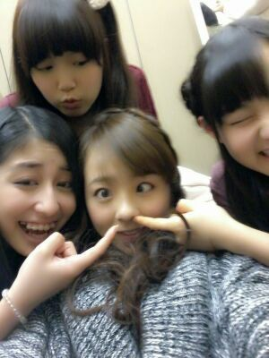
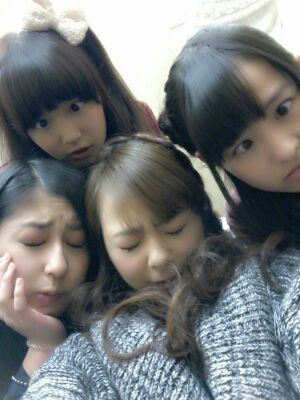
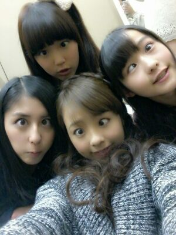
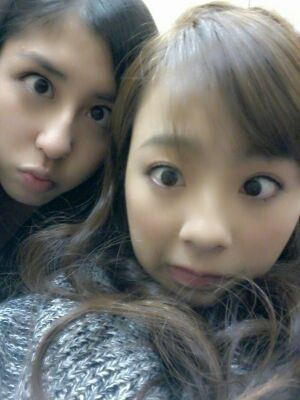

| 2013/01 21 Mon | 川村真洋 乃木神社☆ 今日は朝から 撮影でしたよんっ(/・▽・)/ rot ty☆ |
ほっほい♪
Rottyです (^^)/

あ. いきなり
こんな写メ... 笑☆
ごめねっ (/>ω<)/
この前、乃木メン団体で
乃木神社へと行ったんですが
まひろ他の用事で
行けてなくって、
昨日 １人できっちりと
行ってきましたよ(*´ω`*)goo !
いぇい♪るん
それにしてもさー
それにしてもさー
昨日は 本当
楽しかったんだよぉ〜(*^^*)
ねえ？ 聞いてくれるぅ〜
ぢゃあ今から色々と
書くねぇ〜〜 〃ω〃

昨日、15時頃に乃木神社☆に
着きました。
そして、入って
ちゃーーんと
お願いごとしてきました*^^*
長すぎたかな♪? ...
5分位 目閉じてた。
嘘。盛った (^ω^)/
それでさっ、
絵馬...
乃木坂family★の皆
Rotty夢☆の皆
本当にありがとうございます(／_・)
『川村真洋ちゃんが選抜復帰
できますように...。』
『川村真洋のファンが
１人でも増えます様に...。』
『アンダーメンバーの
活躍の場が増えます様に...。』
『乃木坂46が国民的アイドルに
なります様に...。』
だとか 他にもたくさん
書いてくれていたね。
本当に嬉しかったです(´；ω；｀)
あと ごめんないっ !
嬉し過ぎて写メ撮らせて
頂きました^^
そして 交通安全の御守りを買って
バッグにしまっまて
乃木神社をでました。
さあっ )))
ここからどーしましょぉ。？
帰る? ...ぃゃぃゃ ちゃう
ちょっとお散歩をしよう ♪

...
とりあえず乃木坂にある坂を
１人でルンルンしながら
歩いたよっ (・▽・)/
今年も 坂登ってゆけます様に...。
と思いながらねっ ☆
・・・・。
結局そっから...
乃木坂〜渋谷まで
歩いて行っちゃいました 。
六本木とかも通りながら...
永遠にまっすぐ...かなり歩いた。
渋谷についてからも
歩き続けたから,,
昨日 3時間位
道、歩き続けた(´▽`)ノ
でも その時に感じたことが
たくさんあったんだお...(´ω`)
歩いていたら、
どっかにそれて行く道や
斜め前に上がって行く階段,
凸凹道や
氷がまだ残ってて危ない所も
あった。
とにかく今日は寄り道しないで
おこうと思って
ただひたすら 真っ直ぐ
歩き続けることにしました(^^)
なんか 人生って
こうやって今歩いている道と
同じだなって思いました *^^*
どー言ったらいいんだろう ?
なんだか歩きながら
色々考えた...
楽しったよお ♪!
自分の夢も 描いた...
赤のヘッドフォンして
マイケル・ジャクソンの BAD★
聞きながら歩いた...
高層ビルがたくさんあって
壁が 鏡になってる建物とかが
あって、
歩いてる自分の姿が
色んな角度から一気に
見える瞬間があった...
『ああ. そうやでな♪
自分のことを色んな角度から
... ... ... 。』
って思った (*´▽`*)
途中 前が見えない位
太陽の光で眩しかった道も
あったよ *´▽`*
光で表示とか何も見えないから
とりあえず ただただ真っ直ぐ
歩いてた。
そしたら たどりついた。
渋谷に /
のほほぉ〜ん (⌒‐⌒)笑
本当に 昨日は自分にとって
いい１日だった ^^
乃木神社で買った御守りは
実家に送りました(・ω・)
「美人になるのど飴」ってのも
一緒に送ったよ (・▽・)/
お医者さんでもらう
お薬が入ってる白い袋あるでしょ?
あれに「美人になるのど飴」
って書いてる アメちゃんを
見つけてしまって
面白いな(・ω・)と思って
買っちゃったんだあ ♪♪
そして今日は朝からずっと
写真撮影があって
また色んな服を着て撮ったよん♪
いい感じに撮れたかなー´・▽・?
そして夜は 新しい曲の振り入れ
をやってきました...´▽`

変顔ぉ〜〜(*^^*)
blog見てくれて
ありがとん♪
それでは皆ちゃま
おやすみなさいぃぃ(〃ω〃)のし。
Rottyより 。